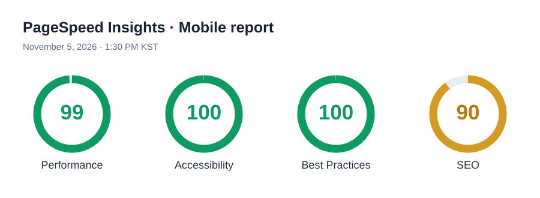
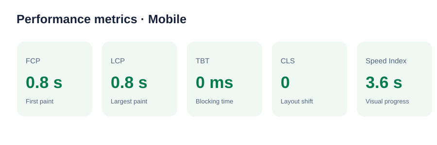

Latest PageSpeed score

Visual reconstruction of the score summary in the supplied PDF, dated November 5, 2026.
Core performance metrics

0.8 sFirst Contentful Paint
0.8 sLargest Contentful Paint
0 msTotal Blocking Time
0Cumulative Layout Shift
3.6 sSpeed Index
Recommended optimization work
- Defer non-critical JavaScript so it does not block HTML parsing.
- Use appropriately sized, compressed images and set width and height.
- Lazy-load below-the-fold images.
- Reduce render-blocking CSS and JavaScript requests.
- Set effective cache lifetimes for static assets.
Opportunities noted in the PDF
Render-blocking requests: estimated savings of 300 ms. Efficient cache lifetimes: approximately 5 KiB.
Test conditions and honest notes
- Target
- Student Budget Tracker
- Test date
- November 5, 2026 · 1:30 PM KST
- Device profile
- Mobile emulation · Moto G Power
- Network
- Slow 4G throttling
- Tool version
- Lighthouse 13.6.0
The PDF contains lab data only; it reports no field data. This report records the latest measured results and opportunities. It does not claim a controlled before/after comparison.